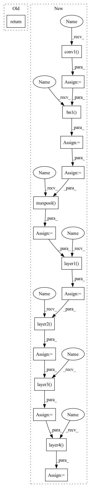

Pattern ID :8244

Before Change
def forward(self, x: Tensor) -> Tensor:
// pylint: disable=missing-function-docstring
return self._forward_impl(x)
def resnet50(**kwargs: Any) -> ResNet:
After Change
Returns:
Tensor: Output
x_in = self.conv1(x_in)
x_in = self.bn1(x_in)
x_in = self.relu(x_in)
x_in = self.maxpool(x_in)
x_in = self.layer1(x_in)
x_in = self.layer2(x_in)
x_in = self.layer3(x_in)
x_in = self.layer4(x_in)
x_in = self.avgpool(x_in)
x_in = torch.flatten(x_in, 1)
return self.fully_connected(x_in)
In pattern: SUPERPATTERN
Frequency: 3
Non-data size: 16
Instances
Fragment ID: 29043067
Project Name: aisingapore/peekingduck
Commit Name: 9bc45686b41e3f581446c4008f3d10c59caa4018
Time: 2022-07-03
Author: ngaitung.kwok@u.nus.edu
File Name: peekingduck/pipeline/nodes/model/mask_rcnnv1/mask_rcnn_files/resnet.py
M Class Name: ResNet
N Class Name: ResNet
M Method Name: forward(2)
N Method Name: forward(2)
M Parent Class: nn.Module
N Parent Class: nn.Module
M File Name: peekingduck/pipeline/nodes/model/mask_rcnnv1/mask_rcnn_files/resnet.py
N File Name: peekingduck/pipeline/nodes/model/mask_rcnnv1/mask_rcnn_files/resnet.py
M Start Line: 373
M End Line: 373
N Start Line: 376
N End Line: 388
'>
Before Change
def forward(self, x: Tensor) -> Tensor:
// pylint: disable=missing-function-docstring
return self._forward_impl(x)
def resnet50(**kwargs: Any) -> ResNet:
After Change
Returns:
Tensor: Output
x_in = self.conv1(x_in)
x_in = self.bn1(x_in)
x_in = self.relu(x_in)
x_in = self.maxpool(x_in)
x_in = self.layer1(x_in)
x_in = self.layer2(x_in)
x_in = self.layer3(x_in)
x_in = self.layer4(x_in)
x_in = self.avgpool(x_in)
x_in = torch.flatten(x_in, 1)
return self.fully_connected(x_in)
'>
Fragment ID: 29043066
Project Name: aimakerspace/peekingduck
Commit Name: 9bc45686b41e3f581446c4008f3d10c59caa4018
Time: 2022-07-03
Author: ngaitung.kwok@u.nus.edu
File Name: peekingduck/pipeline/nodes/model/mask_rcnnv1/mask_rcnn_files/resnet.py
M Class Name: ResNet
N Class Name: ResNet
M Method Name: forward(2)
N Method Name: forward(2)
M Parent Class: nn.Module
N Parent Class: nn.Module
M File Name: peekingduck/pipeline/nodes/model/mask_rcnnv1/mask_rcnn_files/resnet.py
N File Name: peekingduck/pipeline/nodes/model/mask_rcnnv1/mask_rcnn_files/resnet.py
M Start Line: 373
M End Line: 373
N Start Line: 376
N End Line: 388
'>
Before Change
x = self.fc(x)
return x
else:
return self.forward_features(x, pyramid=pyramid)
def resnets_get_layer_id_and_scale_exp(self, para_name: str):
After Change
this forward function is a modified version of `timm.models.resnet.ResNet.forward`
>>> ResNet.forward
x = self.conv1(x)
x = self.bn1(x)
x = self.act1(x)
x = self.maxpool(x)
ls = []
x = self.layer1(x)
ls.append(x if hierarchy >= 4 else None)
x = self.layer2(x)
ls.append(x if hierarchy >= 3 else None)
x = self.layer3(x)
ls.append(x if hierarchy >= 2 else None)
x = self.layer4(x)
ls.append(x if hierarchy >= 1 else None)
if hierarchy:
return ls
'>
Fragment ID: 29043064
Project Name: keyu-tian/spark
Commit Name: f1b1d8fc1e2a7b9a1d0221c29f30cd3d80c2b54d
Time: 2023-02-18
Author: tiankeyu@bytedance.com
File Name: models/resnet.py
M Class Name: AnonimousClass
N Class Name: AnonimousClass
M Method Name: forward(3)
N Method Name: forward(3)
M Parent Class:
N Parent Class:
M File Name: models/resnet.py
N File Name: models/resnet.py
M Start Line: 38
M End Line: 46
N Start Line: 18
N End Line: 34